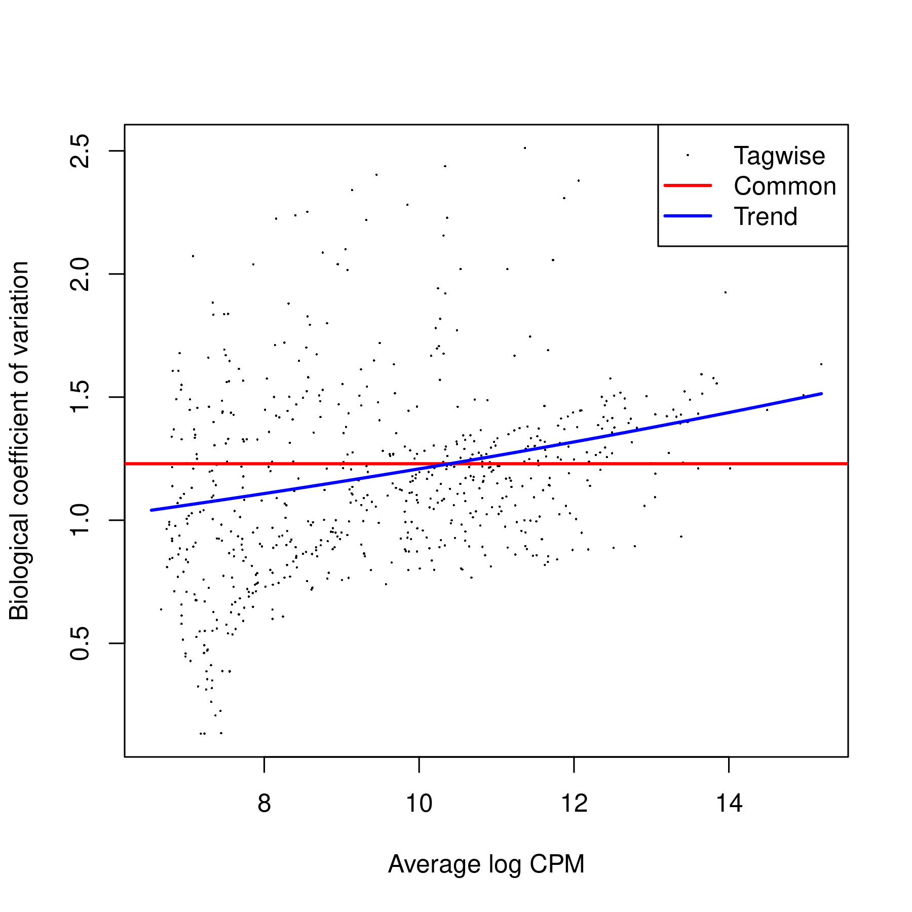
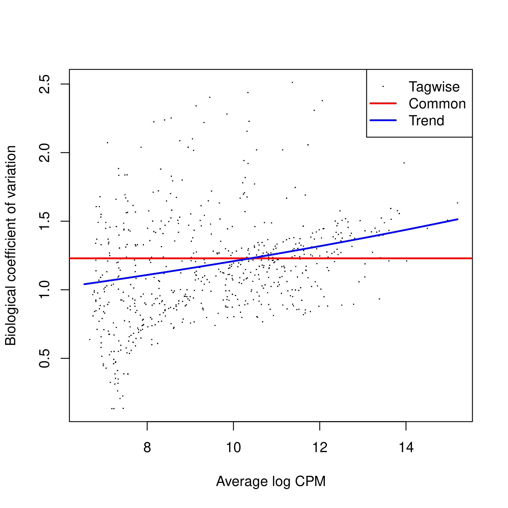
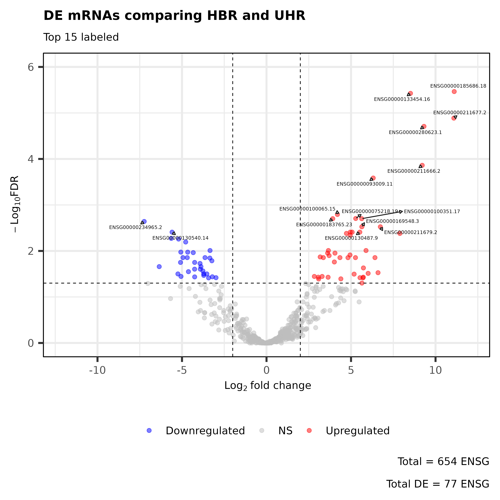

Author: Tianze (Vincent) Luo
Date: 2025-04-24
RNA-seq data on a single chromosome in multiple experiments
Files: /ix1/hugen2072-2025s/p7/
Interactive session command: crc-interactive --teach -a hugen2072-2025s -t 4:00:00
######## 0. Setup ArrayJobs ########
exp=$(awk -v lineNumb=$(($SLURM_ARRAY_TASK_ID+1)) 'NR==lineNumb { print $0 }' ls_exp.txt)
## for output file names
exp_prefix=$(echo $exp | sed 's/_ERCC.*//')
## add read{1,2} as input
# .read1.fastq.gz
# .read2.fastq.gz
exp_read1="${exp}.read1.fastq.gz"
exp_read2="${exp}.read2.fastq.gz"
echo "Job for Experiment *** ${exp_prefix} *** started at: $(date)"
echo $exp_read1
echo $exp_read2
> ls_exp.txt
HBR_Rep1_ERCC-Mix2_Build37-ErccTranscripts-chr22
HBR_Rep2_ERCC-Mix2_Build37-ErccTranscripts-chr22
UHR_Rep1_ERCC-Mix1_Build37-ErccTranscripts-chr22
UHR_Rep2_ERCC-Mix1_Build37-ErccTranscripts-chr22
exp=$(awk -v lineNumb=$(($SLURM_ARRAY_TASK_ID+1)) 'NR==lineNumb { print $0 }' ls_exp.txt)
# $SLURM_ARRAY_TASK_ID = 0 --> line 1
# $SLURM_ARRAY_TASK_ID = 1 --> line 2
# $SLURM_ARRAY_TASK_ID = 2 --> ...
# $SLURM_ARRAY_TASK_ID = 3 --> ...
# Allows correspondance of jobarray ID to experiments
echo "Job for Experiment *** ${exp_prefix} *** started at: $(date)"
# Job for Experiment *** HBR_Rep1 *** started at: Thu Apr 24 23:01:35 EDT 2025
echo $exp_read1
# HBR_Rep1_ERCC-Mix2_Build37-ErccTranscripts-chr22.read1.fastq.gz
echo $exp_read2
# HBR_Rep1_ERCC-Mix2_Build37-ErccTranscripts-chr22.read2.fastq.gz
cutadapt: trim adapter sequencemkdir -p ../output/1_cutadapt
# -a/-A: Universal Illumina adapters (3')
# -o/-p: OUTPUT (first/second)
cutadapt -a AGATCGGAAGAGCACACGTCTGAACTCCAGTCA -A AGATCGGAAGAGCGTCGTGTAGGGAAAGAGTGT \
-o ../output/1_cutadapt/${exp_prefix}.trimmed.R1.fastq.gz -p ../output/1_cutadapt/${exp_prefix}.trimmed.R2.fastq.gz \
../p7/${exp_read1} ../p7/${exp_read2}
# Example
# input: ../p7/HBR_Rep1_ERCC-Mix2_Build37-ErccTranscripts-chr22.read{1,2}.fastq.gz
# output: -o ../output/1_cutadapt/HBR_Rep1.trimmed.R1.fastq.gz
STAR: Aligning the readsmkdir -p ../output/2_STAR
STAR --runThreadN 2 \
--runMode alignReads \ # map reads
--outSAMstrandField intronMotif \ # strand derived from the intron motif. reads with inconsistent and/or non-canonical introns are filtered out.
--twopassMode Basic \
--readFilesIn ../output/1_cutadapt/${exp_prefix}.trimmed.R1.fastq.gz \
../output/1_cutadapt/${exp_prefix}.trimmed.R2.fastq.gz \
--outFileNamePrefix ../output/2_STAR/${exp_prefix} \ # ../output/2_STAR/HBR_Rep1
--quantMode GeneCounts \ # only count matrix; No output SAM/BAM alignments
--outStd Log \ # which output will be directed to stdout (standard out) -- only log
--outWigType bedGraph \
--outWigReferencesPrefix ../output/2_STAR/${exp_prefix}_bedgraph \
--genomeDir ../p7/STAR_reference/ \ # where genome indices where generated (pre-generated)
--readFilesCommand zcat \ # zcat - to uncompress .gz files
--outSAMtype BAM SortedByCoordinate # similar to samtools sort command.
*ReadsPerGene.out.tab[til177@teach-cpu-n0 2_STAR]$ ll *ReadsPerGene.out.tab
# -rw-r--r-- 1 til177 mmarazita 1.5M Apr 24 23:08 HBR_Rep1ReadsPerGene.out.tab
# -rw-r--r-- 1 til177 mmarazita 1.5M Apr 24 23:08 HBR_Rep2ReadsPerGene.out.tab
# -rw-r--r-- 1 til177 mmarazita 1.5M Apr 24 23:08 UHR_Rep1ReadsPerGene.out.tab
# -rw-r--r-- 1 til177 mmarazita 1.5M Apr 24 23:08 UHR_Rep2ReadsPerGene.out.tab
module load gcc/12.2.0 r/4.4.0
Rscript --vanilla p07_DE_tvl.R > ../output/DiffGeneExpr.log
Important Notes in the DGE analysis pipeline
When we read *ReadsPerGene.out.tab into R, each file has 3 samples
> head(hbr1)
# V1 V2 V3 V4
# 1 ENSG00000223972.5 0 0 0
# 2 ENSG00000227232.5 0 0 0
# 3 ENSG00000278267.1 0 0 0
# 4 ENSG00000243485.5 0 0 0
# 5 ENSG00000284332.1 0 0 0
# 6 ENSG00000237613.2 0 0 0
> head(hbr2)
# V1 V2 V3 V4
# 1 ENSG00000223972.5 0 0 0
# 2 ENSG00000227232.5 0 0 0
# 3 ENSG00000278267.1 0 0 0
# 4 ENSG00000243485.5 0 0 0
# 5 ENSG00000284332.1 0 0 0
# 6 ENSG00000237613.2 0 0 0
# ...
Combine the count data into one data.frame (same transcript for each row across experiments) -> matrix
## hbr first, uhr next
expr <- cbind(hbr1[,c(2:4)],
hbr2[,c(2:4)],
uhr1[,c(2:4)],
uhr2[,c(2:4)])
expr <- as.matrix(expr)
class(expr)
# [1] "matrix" "array"
rownames(expr) <- hbr1$V1
colnames(expr) <- NULL
dim(expr)
# [1] 60710 12
> head(expr)
# [,1] [,2] [,3] [,4] [,5] [,6] [,7] [,8] [,9] [,10] [,11]
# ENSG00000223972.5 0 0 0 0 0 0 0 0 0 0 0
# ENSG00000227232.5 0 0 0 0 0 0 0 0 0 0 0
# ENSG00000278267.1 0 0 0 0 0 0 0 0 0 0 0
# ENSG00000243485.5 0 0 0 0 0 0 0 0 0 0 0
# ENSG00000284332.1 0 0 0 0 0 0 0 0 0 0 0
# ENSG00000237613.2 0 0 0 0 0 0 0 0 0 0 0
# [,12]
# ENSG00000223972.5 0
# ENSG00000227232.5 0
# ENSG00000278267.1 0
# ENSG00000243485.5 0
# ENSG00000284332.1 0
# ENSG00000237613.2 0
Record the group info (required when doing DE analysis), create DGEList object (for normalizations & input into DE analysis)
# The first 6 were from HBR, the second 6 from UHR
data_groups <- c(rep("hbr",6), rep("uhr",6))
data_groups
# [1] "hbr" "hbr" "hbr" "hbr" "hbr" "hbr" "uhr" "uhr" "uhr" "uhr" "uhr" "uhr"
d <- DGEList(counts=expr, group=factor(data_groups))
d
# An object of class "DGEList"
# $counts
# Sample1 Sample2 Sample3 Sample4 Sample5 Sample6 Sample7
# ENSG00000223972.5 0 0 0 0 0 0 0
# ENSG00000227232.5 0 0 0 0 0 0 0
# ENSG00000278267.1 0 0 0 0 0 0 0
# ENSG00000243485.5 0 0 0 0 0 0 0
# ENSG00000284332.1 0 0 0 0 0 0 0
# Sample8 Sample9 Sample10 Sample11 Sample12
# ENSG00000223972.5 0 0 0 0 0
# ENSG00000227232.5 0 0 0 0 0
# ENSG00000278267.1 0 0 0 0 0
# ENSG00000243485.5 0 0 0 0 0
# ENSG00000284332.1 0 0 0 0 0
# 60705 more rows ...
# $samples
# group lib.size norm.factors
# Sample1 hbr 37357 1
# Sample2 hbr 3275 1
# Sample3 hbr 38242 1
# Sample4 hbr 45971 1
# Sample5 hbr 4047 1
# 7 more rows ...
Filter the data (filter OUT low-expressed transcripts across samples)
# cpm transformation -> T/F matrix -> rowSums (per transcript across samples)
keep <- rowSums(cpm(d)>100) >= 2 # This picks out row numbers of genes that are expressed (cpm > 100) in at least 2 samples
d <- d[keep,] # **Keep only the genes expressed (cpm > 100) in at least 2 samples**
dim(d) # 654 genes are left
# [1] 654 12
d$samples$lib.size <- colSums(d$counts) # Update the "library size" (the total number of transcripts) for each sample
d$samples
# group lib.size norm.factors
# Sample1 hbr 37234 1
# Sample2 hbr 3262 1
# Sample3 hbr 38123 1
# Sample4 hbr 45780 1
# Sample5 hbr 4021 1
# Sample6 hbr 46862 1
# Sample7 uhr 63518 1
# Sample8 uhr 4339 1
# Sample9 uhr 64908 1
# Sample10 uhr 41848 1
# Sample11 uhr 3472 1
# Sample12 uhr 42082 1
Normalize the reads and plot them
d <- calcNormFactors(d) # This stores the scaling factors for normalization in d$samples$norm.factors
d
# An object of class "DGEList"
# $counts
# Sample1 Sample2 Sample3 Sample4 Sample5 Sample6 Sample7
# ENSG00000198062.15 0 0 0 0 0 0 3
# ENSG00000206195.11 3 0 3 1 0 1 107
# ENSG00000271127.2 0 0 0 0 0 0 11
# ENSG00000232775.6 0 0 0 1 1 0 2
# ENSG00000272872.1 1 0 1 1 0 1 22
# Sample8 Sample9 Sample10 Sample11 Sample12
# ENSG00000198062.15 0 3 5 1 4
# ENSG00000206195.11 0 107 72 1 71
# ENSG00000271127.2 0 11 1 0 1
# ENSG00000232775.6 2 0 5 5 0
# ENSG00000272872.1 0 22 12 0 12
# 649 more rows ...
# $samples
# group lib.size norm.factors
# Sample1 hbr 37234 0.7271597
# Sample2 hbr 3262 2.4586720
# Sample3 hbr 38123 0.7191907
# Sample4 hbr 45780 0.7275449
# Sample5 hbr 4021 2.2131558
# 7 more rows ...
plotMDS(d, method="bcv", col=as.numeric(d$samples$group))
legend("bottomleft", as.character(unique(d$samples$group)), col=1:2, pch=20)
Fit a trend in CV vs. mean (single dispersion & GLM)
d1 <- estimateCommonDisp(d, verbose=T)
# Disp = 1.44585 , BCV = 1.2024
d1 <- estimateTagwiseDisp(d1)
plotBCV(d1)
# Estimate and plot again, using a generalize linear model to get better fit
design.mat <- model.matrix(~ 0 + d$samples$group)
colnames(design.mat) <- levels(d$samples$group)
d2 <- estimateGLMCommonDisp(d,design.mat)
d2 <- estimateGLMTrendedDisp(d2,design.mat, method="power")
d2 <- estimateGLMTagwiseDisp(d2,design.mat)
plotBCV(d2)
 

Genewise Exact Test for NB distributed counts between UHR - HBR
"so if the pair is c("A","B") then the comparison is B - A, so genes with positive log-fold change are up-regulated in group B compared with group A (and vice versa for genes with negative log-fold change)."
pair=c(1,2): 1 = HBR, 2 = UHRWe are finding DE genes for UHR/cancer
# compare groups 1 and 2 (HBR, UHR)
et12 <- exactTest(d1, pair=c(1,2))
# Look at the top 10 DE genes
topTags(et12, n=10)
# Comparison of groups: uhr-hbr
# logFC logCPM PValue FDR
# ENSG00000185686.18 11.105786 12.402565 5.243387e-09 3.429175e-06
# ENSG00000133454.16 8.517490 9.904674 1.146932e-08 3.750466e-06
# ENSG00000211677.2 11.084370 12.382343 5.950079e-08 1.297117e-05
# ENSG00000280623.1 9.316181 10.666070 1.198342e-07 1.959289e-05
# ENSG00000211666.2 9.212263 10.571262 1.051225e-06 1.375002e-04
# ...
# How many are up- or down-regulated?
de1 <- decideTestsDGE(et12, adjust.method="BH", p.value=0.05)
summary(de1)
# uhr-hbr
# Down 32
# NotSig 577
# Up 45
#### Plot log(fold change) vs. log(cpm) ####
# Significantly differently-expressed genes are shown in red
de1tags12 <- rownames(d1)[as.logical(de1)]
plotSmear(et12, de.tags=de1tags12)
abline(h = c(-2, 2), col = "blue")
#### Report the list of the differentially expressed genes (DEGs) ####
# Get the summary table for: ***ALL DE genes with FDR < 0.05***
DEG_fdr_tab = topTags(et12, n = Inf, adjust.method = "BH", p.value = 0.05) #adjusted p-value cutoff
# 77 DEGs
nrow(DEG_fdr_tab)
# [1] 77
# 32 down + 45 up
summary(de1)
# uhr-hbr
# Down 32
# NotSig 577
# Up 45
#### Output ####
library(tidyverse)
df_DEG_fdr_tab = rownames_to_column(as.data.frame(DEG_fdr_tab), var = "ENSG")
# 1. summary table
write_csv(df_DEG_fdr_tab, file="../output/3_DiffGeneExpr_result/table_DEGs_fdr.csv")
# 2. list of DEGs
write.table( rownames(DEG_fdr_tab), file="../output/3_DiffGeneExpr_result/ls_DEGs_fdr.txt",
quote = FALSE, sep=" ", row.names = FALSE, col.names = FALSE)
UHR - HBR 
output/DiffGeneExpr.log and code/Rplots.pdf for details.Based on the description of the experiments, describe the biological function you think the differentially expressed genes should be associated with.
Universal Human Reference (UHR) is total RNA isolated from a diverse set of 10 cancer cell lines.
Human Brain Reference (HBR) is total RNA isolated from the brains of 23 Caucasians, male and female, of varying age but mostly 60-80 years old.
The mRNAs DE in UHR compared to HBR should be enriched in biological pathways involving:
Positive regulation in metabolism and cell proliferation (or cell cycle);
Negatively associated with degeneration, cell death, apoptosis, neuronal functions.